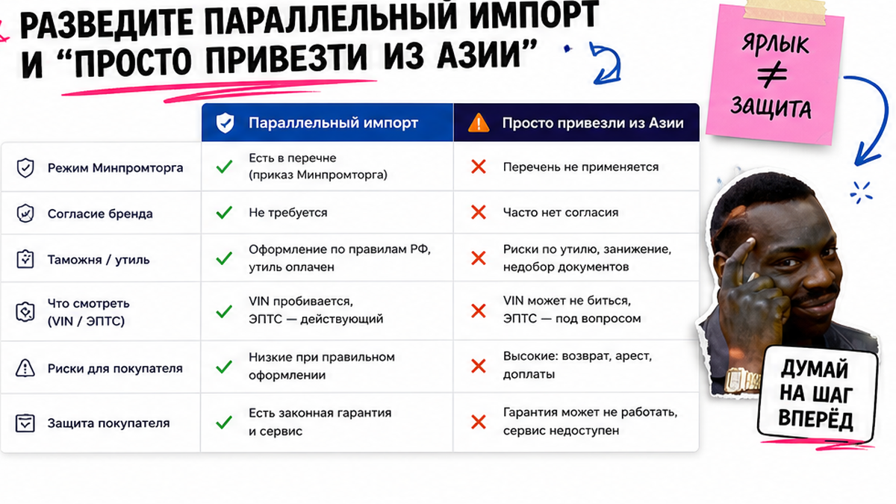
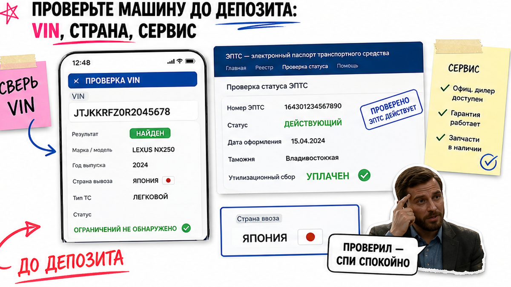
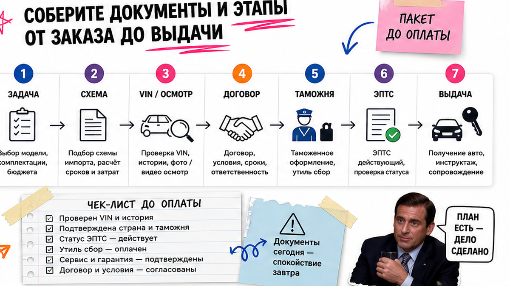

Андрей из Новосибирска увидел на Avito кроссовер "по параллельному импорту дешевле рынка на миллион". Менеджер просил деньги "чтобы забронировать", VIN обещал после оплаты, про ЭПТС говорил "потом сами оформим". Страх знакомый и дорогой: отдать депозит и потом получить доначисление пошлин, паспорт со статусом не "действующий" или гарантию только на словах. Ниже – чек-лист до перевода: что спросить, что сверить и когда сказать "стоп".
Коротко по делу: Параллельный импорт сам по себе легален, но ярлык в объявлении не равен безопасной сделке. До оплаты нужны VIN, ЭПТС со статусом "действующий" (или письменный план его получения), договор с итоговой ценой и ответом "кто платит при доплатах", плюс понятная таможенная цепочка. Нет пакета – нет перевода.
Мы в Авто-Сейлс во Владивостоке сто раз слышали "менеджер сказал, что всё включено". На практике "всё" часто значит "потом разберёмся". Гайд для обычного покупателя без хаоса в бумагах: сначала VIN, потом деньги. Так вы сможете спокойно сказать "плачу" или "стоп".

Параллельный импорт – юридический режим: оригинальный товар из перечня Минпромторга можно ввезти без согласия правообладателя. Таможня, утильсбор и оформление паспорта при этом никто не отменял. "Пригнать из Азии" – бытовой ярлык про маршрут. Это не одно и то же.
На пальцах: режим похож на разрешение продавать фирменные кроссовки, купленные за рубежом, без договора с брендом. Но на таможне всё равно проверяют стоимость и платежи. Ввоз физлицом "для себя" и схема юрлица в рекламе часто смешивают – вам важнее документы на конкретную машину.
| Критерий | Параллельный импорт (режим) | Просто "привезли из Азии" |
|---|---|---|
| Опора | Перечень Минпромторга, группа 87 ТН ВЭД | Любой маршрут под заказ или "уже на складе" |
| Согласие бренда | Не требуется для марок из перечня | Не показатель законности сделки |
| Таможня и утильсбор | Обязательны | Обязательны для учёта в РФ |
| Что смотреть | VIN, ЭПТС, декларация, договор | Тот же пакет – ярлык не освобождает |
Китайские бренды с представительствами в РФ (Haval, Chery, Geely, BYD и аналоги) в механизм параллельного импорта обычно не входят. Если продавец так называет любой "пригон" – просите схему письменно.
Сделайте: спрашивать схему и документы. Не делайте: считать слово "параллельный" защитой от сюрпризов.

Типичная ошибка – бронь "пока не ушло", пока VIN ещё "в пути". Без идентификатора вы покупаете рассказ. VIN – уникальный номер кузова, как серия паспорта. По нему сверяют историю, паспорт и договор.
ЭПТС – электронный паспорт транспортного средства. Его проверяют на портале СЭП (elpts.ru). Для учёта нужен статус "действующий". "Незавершённый" часто значит, что не закрыты платежи или оформление – до оплаты это стоп.
Например, продавец говорит "гарантия как у дилера". На практике заводская гарантия на параллельный импорт автоматически обычно не действует. Нужна письменная программа – иначе это маркетинг.
Сделайте: правило "нет VIN – нет денег". Не делайте: принимать устные обещания про ЭПТС "потом".

Схема без сюрпризов:
Задача и бюджет → Проверка марки/схемы → VIN и осмотр → Договор с итоговой ценой → Таможенная цепочка и платежи → ЭПТС "действующий" → Выдача и учёт
Утильсбор – обязательный платёж при ввозе; размер зависит от параметров машины и статуса ввоза. Готовые суммы в статье не публикуем: расчёт берите под ваш VIN. Ориентир сроков у части рынка – порядка 2–8 недель от подбора до готовности к учёту; фиксированный срок без расчёта обещать нельзя.
В договоре ищите четыре опоры: цена "под ключ", сроки, возврат аванса, реквизиты получателя = сторона договора. Деньги на карту "Ивана" при договоре с ООО – стоп. Отдельно попросите таможенную цепочку: где оформляли, какие платежи внутри цены, кто платит при корректировке. Споры о таможенной стоимости в 2026 ещё встречаются; проверка бумаг до оплаты остаётся на вас.
Сделайте: собирать пакет до оплаты. Не делайте: переводить вне договора.
Сюрприз для многих: параллельный импорт легален (постановление Правительства РФ № 506 и перечень Минпромторга), но в быту так же называют схемы через ЕАЭС с заниженной стоимостью. Законность режима не равна безопасности сделки.
Перечень менялся: правки приказа № 4769 применяются с 27.05.2026. Сверяйте не только бренд, но и строку группы 87. Для части китайских авто заранее уточняйте вопрос про софт и аккаунты – это не таможня, но сюрприз в эксплуатации.
Сделайте: требуйте состав цены и письменные сроки. Не делайте: гнаться за заниженной схемой ради скидки на бумаге. Избегайте оплаты "только сегодня" без документов.
Критерий "плачу" или "стоп". Хотя бы один красный пункт – перевод откладываете. Этот чеклист как раз закрывает проблему депозита вслепую.
Критерий успеха: до оплаты у вас есть VIN, статус ЭПТС "действующий" (или понятный письменный план), договор с итоговой ценой и ответственностью за доплаты, подтверждённая таможенная цепочка. Без этого пункта сделки нет.
Сделайте: идти по списку сверху вниз. Не делайте: закрывать глаза на один пункт ради комплектации.
Если продавец отвечает "VIN после оплаты" или "ЭПТС потом сами" – это не торг, а другой риск. В реальном проекте безопаснее уйти в подбор под заказ: критерии фиксируете заранее, документы появляются до крупных платежей.
Мы во Владивостоке закрываем путь "из Азии под ключ": подбор, проверка, логистика, таможня, выдача. Актуальные варианты и расчёт – в каталоге avto-sales125.ru. Детали по схеме – в Telegram @avtosales125. Форм на странице нет: бронь и расчёты живут в каталоге и переписке.
Сделайте: выбирать канал, где пакет есть до крупного перевода. Не делайте: брать "уже приехало дёшево" без ЭПТС и таможенной цепочки.
Материал проверен: Редакция Авто-Сейлс (эксперты по авто под заказ из Японии, Кореи и Китая).
Источники сверки: на 30.09.2026 – мера Правительства о параллельном импорте, постановление № 506, актуальный перечень Минпромторга, elpts.ru и практика 2026 (Autonews плюс сопровождение заказов). Суммы платежей в текст не включали – расчёт только в каталоге.
Да, если позиция есть в актуальном перечне Минпромторга и документы чистые. Сначала сверьте перечень и договор, потом думайте про оплату. Без VIN и таможенной цепочки "новый" не отменяет риски.
Часто это европейские/японские марки из КНР по перечню либо китайские бренды вне механизма параллельного импорта. До оплаты попросите схему письменно: страна ввоза, декларант, платежи в цене.
Заводская гарантия автоматически обычно не действует. Берите письменные условия продавца или сервисной программы и адрес ремонта. Устное "гарантия есть" не принимайте.
Полный VIN, договор с итоговой ценой и возвратом аванса, ЭПТС в СЭП со статусом "действующий" (или письменный план), таможенная цепочка и кто платит при доначислении. Нет пакета – нет перевода.
Не оплачивайте крупный платёж. Уточните, что не закрыто, и дождитесь статуса "действующий" либо зафиксируйте план и ответственность в договоре до выдачи.
Когда нет VIN до оплаты, ЭПТС не "действующий", цена без состава платежей или давят срочностью. Тогда безопаснее подбор под заказ с этапами до крупных сумм – через каталог и переписку, без форм на странице.